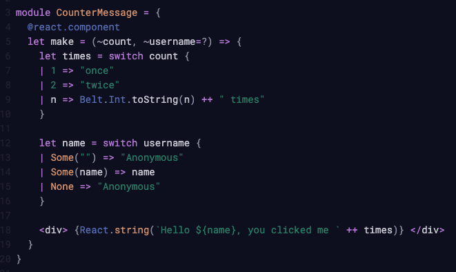

What actually is Sound Type System?
ReasonML by Jordan Walke at Facebook
Bucklescript by Hongbo Zhang at Bloomberg
Bucklescript rebranded to Rescript
Strongly Typed Functional Language
Fast compiler that emits readable Javascript
Nice support for JS Interoperability
Simple Editor tooling
Uses same npm tooling

Variables
Types
Data - Arrays, Tuples, Records
Functions
Conditionals - If/Else, Switch
Pattern Matching
No Null & Undefined
Inbuilt support for JSX
Rescript offers first class bindings support for React
We can always use our favourite react libraries
https://github.com/protoship/rescript-tutorial
https://github.com/fhammerschmidt/awesome-rescript
Inspiration for large scale apps -
https://github.com/pupilfirst/pupilfirst
~ 433 files and ~ 50689 loc ( only rescript )
Any Questions ?